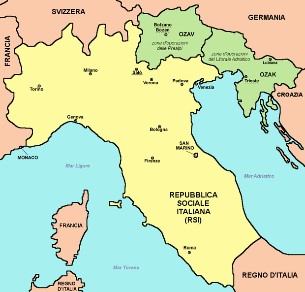

La Resistenza a Sud e Nord: l’Italia divisa
 Dopo l’8 settembre del 1943 l’Italia rimase separata in due distinte zone geografiche: il cosiddetto “Regno del Sud”, dove esisteva il governo costituzionalmente legittimo con a capo Badoglio, e la Repubblica Sociale Italiana (RSI), fondata da Mussolini, dopo essere stato liberato dalla prigionia di Campo Imperatore, sul Gran Sasso.
Nell’Italia meridionale gli scontri isolati di alcuni reparti dell’esercito tedesco in ritirata non avevano avuto i caratteri di una vera e propria Resistenza. Tuttavia, fu esemplare, a questo riguardo, l’episodio delle Quattro Giornate di Napoli. Successivamente, la formazione dei locali Comitati di Liberazione Nazionale non avvenne sul fondamento di un consenso popolare — come invece vedremo accadere nel Nord — ma fu più che altro un’operazione di vertice: ne facevano parte i rappresentanti della Dc, del Psi, del Pci e della Democrazia del Lavoro.
Da questo momento in poi, al Sud, la politica incontrò il pressoché totale disinteresse della popolazione cittadina, occupata nella non facile impresa di sopravvivere. Nel frattempo, dopo la “svolta di Salerno” voluta da Togliatti e con l’occupazione angloamericana di Roma — dove gli angloamericani entrarono il 4 giugno 1944 — la vita politica del Regno del Sud si normalizzò. A Badoglio succedette Ivanoe Bonomi, chiamato a presiedere un nuovo governo di unità nazionale. Ma la nascente Resistenza non fece altro che allargare le differenze tra Nord e Sud.